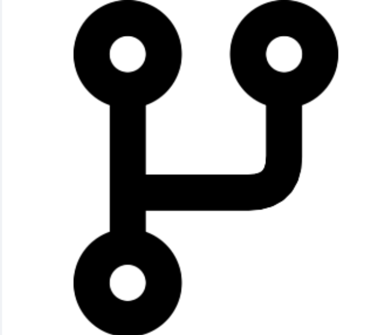
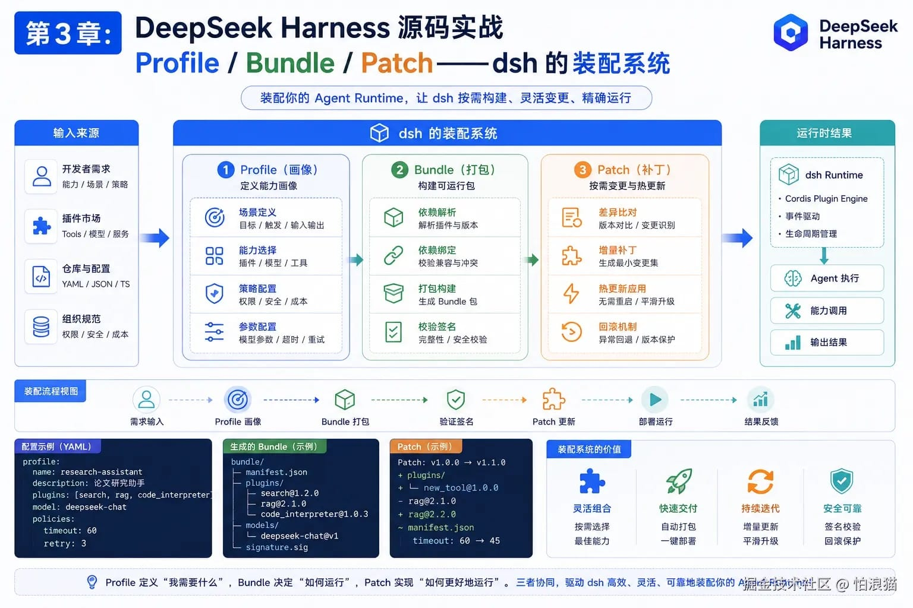
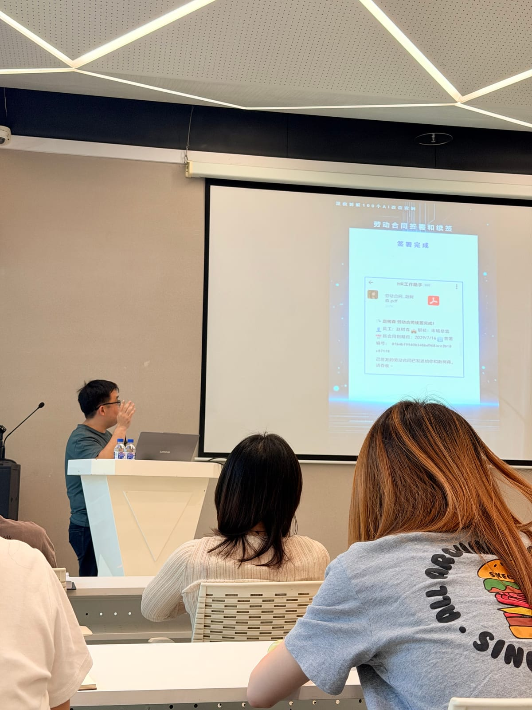

在和Agent讨论需求，他给我了几条建议，我回“都按照你说的做”，然后它就开始写代码了🤦🏻♂️🤦🏻♂️🤦🏻♂️。可能我说的草率了点，但我不是开工的意思啊！而且明显是讨论还没有结束的状态，我觉得聪明的模型能判断出来我没有开始写的意思，我用的是DeepSeek flash
《Pi中AGENTS.md的加载机制》
在Pi Agent中同样支持AGENTS.md、CLAUDE.md等等，他的加载机制相关的几个问题记录：
阅读全文 →《几种模型请求协议格式整理》
Chat Completions 是 2023 年 3 月随 gpt-3.5-turbo 出的，之后成了事实上的行业标准。Responses API 是 2…
阅读全文 →最近一个rea项目特别火，他能逆向别人软件的实现方法，复刻出一个自己的。其实这个项目本身并不复杂，他只是把已经开源的相关库整合到了一起，实现了ai的自动化，效果很好，但他背后悄悄在你电脑中装了好多东西。这思路子很苹果，不在单点上突破，通过超强的整合能力，能做到后发制人 🙃

如果没有了AI，我会变得啥也不是🙃
把这个图交给ai，让他按照这个画个图标出来，怎么都画不对，后来我说小写英文字母h上下翻转过来，一次成功！😎

现在厂商开始上手段留住用户了， 之前是用户随便切个模型就流失了， 现在的agent和自家模型的适配度越来越高， 让用户觉得这样搭配使用是最优解从而留住用户， 还有各种赠送，也是为了让你多在我这停留使用，让你爱上我， openai的28天计划， 不断的重置， 还有现在火起来的agent上云， 如果你一旦依赖一家的云服务， 那么离开的成本直接上升到百分之九十， 跑不了了！
我们要接受一个事实，如果一个软件是 AI 用一晚上、几天，或者一个礼拜做出来的，那这个软件本身没啥价值。但是自用、解决自己生活里的一些痛点，这类还算有点价值，也就是方便了自己，就这么一点价值。
遇到这样插图的文章就不想看了，太AI了🙃

今天去听了个讲座，讲企业级agent助力HR工作这么个主题。做好了没啥干货的准备，但没想到这么水。
有个听众提了个他们公司遇到的难点，就是考勤规则变化了导致原有系统不满足了，但出于找其他公司来迭代系统会有较大成本的痛点，问老师能不能利用agent来解决，老师竟然说用提示词来写考勤规则，说之后想怎么变就用自然语言来改规则就行，我也是震惊了，他居然是这么来适配的🙃
然后到了演示环节，我还期待着老师的实际案例，没想到老师直接打开了电脑中早就安装好的Hermes🥲，然后我等他要做什么操作，老师让Hermes写了个skill，内容大概就是找出文件中合同快到期的员工并用企微消息通知员工，写完skill后老师运行了一下，然后说看到了吗我的企业微信已经收到了消息，就这样，这就是“agent落地企业”的讲座？？？

乍一看这屁话是谁说的，眼睛往下一瞟，人民日报，那好吧 🥲

《文艺复兴时代的开发者们》
这是亚马逊CTO Werner Vogels（沃纳·沃格尔斯）博客中的一篇文章的节选，我觉得他说的很对，程序员们，我们不应该担心着某一天丢掉工作，我们应该为…
阅读全文 →我觉得现在AI Coding在补充一些小需求小改动上任何人用起来难度都不算大了，结果一般也会符合预期，难的在于从0开始一个项目、需求还没固定的项目，挺难的，而且工作量很大 🙃
刚刚又遇到了AI Coding的一个头疼的事，我让他写后台的日志记录，他给我同步和异步两个方案，推荐我同步，写的很详细哦，要是没有耐心去读，真的发现不了问题。然后我问他“那如果主链路成功了，然后日志记录失败了，要提醒前台吗，这个请求算成功了吗”，他说业界普遍做法是不通知前台，日志会记录error，然后我说“你的规划中考虑到这点了是吧”，他回答“问得好 ——老实说：没有。”，他说没有！！！服了
今天苹果的发布会可是意义非凡啊🙃